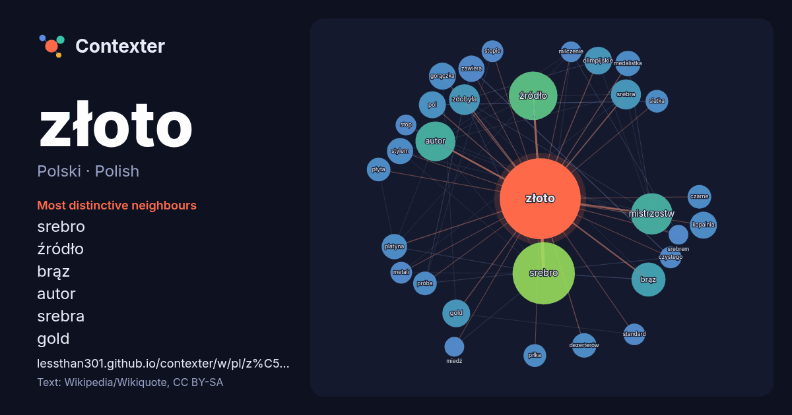

Polski · Polish · word of the day list
złoto
“gold” · The words found around it in 1280 instances from Polish Wikipedia, Wikiquote.

Most distinctive neighbours
- srebro 77×
- źródło 36×
- brąz 24×
- autor 21×
- srebra 20×
- gold 18×
- gorączka 18×
- kopalnia 16×
- platyna 16×
- olimpijskie 16×
- dezerterów 15×
- pol 14×
- siatka 13×
- próba 12×
- stopie 12×
- czystego 12×
- stylem 12×
- medalistka 12×
- piłka 11×
- zdobyła 11×
× = how many times more often than in general Polish Wikipedia text.
Most frequent neighbours
- srebro 90
- świata 56
- źródło 55
- mistrzostw 40
- autor 37
- zdobył 36
- polski 32
- brąz 27
- europy 23
- zdobyła 22
- srebra 21
- mistrzostwach 19
- gold 18
- olimpijskie 18
- gorączka 17
- kopalnia 17
- metrów 17
- mistrzostwa 17
- opis 17
- pol 17
In context
- Złoto (Au, łac. aurum) – pierwiastek chemiczny o liczbie atomowej 79. Złoto jest gęstym, miękkim i błyszczącym metalem, najbardziej kowalnym i ciągliwym Wikipedia snippets · Złoto
- Złota Piłka (fr. Ballon d’Or, ang. The Golden Ball) – coroczny plebiscyt piłkarski. Trofeum przyznawane piłkarzowi oraz piłkarce, którzy zaprezentowali Wikipedia snippets · Złota Piłka
- Złoto dezerterów – polska komedia wojenna z 1998 roku w reżyserii Janusza Majewskiego, będąca kontynuacją filmu C.K. Dezerterzy (1986). Zdjęcia trwały Wikipedia snippets · Złoto dezerterów
- Złoto III Rzeszy (niem. Nazigold) – określenie używane dla mienia w postaci złota gromadzonego przez nazistowskie Niemcy w latach 1933–1945. Złoto występuje Wikipedia snippets · Złoto III Rzeszy
- Złoto Yamashity (Skarb Yamashity) − termin odnoszący się do rzekomego bogatego łupu zrabowanego w Azji południowo-wschodniej przez wojska japońskie podczas Wikipedia snippets · Złoto Yamashity
- Złoto jadalne – szczególny rodzaj złota dopuszczony przez Unię Europejską i Stany Zjednoczone jako dodatek do żywności z kodem E 175. Jest używane w haute Wikipedia snippets · Złoto jadalne
- wymienialność dolara na złoto dla własnych obywateli. W 1971 roku USA wycofały się z tego parytetu. W 1972 roku uncja złota osiągnęła cenę 42 dolarów Wikipedia snippets · Dolar amerykański
- Złoto dla zuchwałych – amerykańsko-jugosłowiańska komedia wojenna z 1970 roku w reżyserii Briana G. Huttona. Francja, rok 1944. Szeregowiec Kelly, zdegradowany Wikipedia snippets · Złoto dla zuchwałych
More Polish words
Precomputed on 2026-10-09 with default settings (±5 words, medium corpus). The interactive map can refresh it with live data.